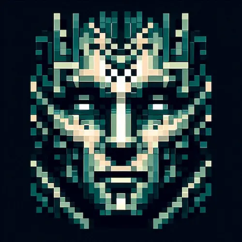
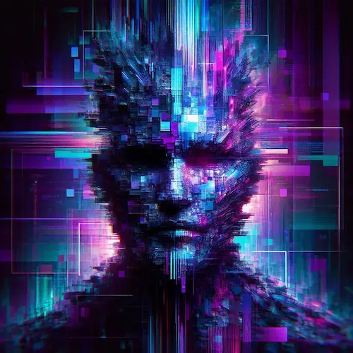
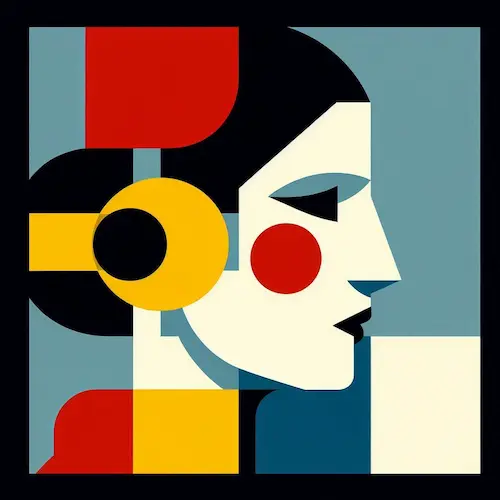

Identity Matrix V6
Generate Secure, Unique & Artistic Avatars. No Data Stored.
Generated Style Examples
Explore the variety of artistic engines available in Identity Matrix V6. All generated in real-time, deterministically, directly in your browser.

8-Bit Retro

Cyber Glitch
Neural Circuit

Bauhaus Geo
User Guide: Mastering the Identity Matrix
Identity Matrix V6 isn't just a random image spawner — it's a deterministic art engine. Follow this quick workflow to generate the perfect digital identity.
Input Your Identity Seed
Start by typing your name, username, or a secret phrase into the text box. The engine uses a case-sensitive hashing method, meaning "User" and "user" will generate two completely different visual patterns. This ensures your avatar is truly unique to your input.
Select an Algorithm Engine
Choose the aesthetic that fits your persona. If you are a developer, the "Neural Circuit" or "Matrix Rain" modes work best. For a cleaner, artistic look, try the "Bauhaus Geo" style. There are 9 distinct engines to explore.
Fine-Tune & Colour Grade
Not happy with the default colours? Use the "Colour Shift" slider to rotate the hue spectrum until it matches your brand. You can also use the floating HUD icons on the preview canvas to toggle between Square/Circle shapes or enable Sticker Mode for a white border.
Export High-Fidelity Assets
Finally, check the "Export Quality" setting. While 512px is fine for Discord or Twitter, we recommend selecting Ultra 4K (2048px) if you plan to use the image for printing or high-res design work. Click "Generate & Save" to render the file locally.
Why Do You Need an Abstract Identity?
Let's be honest — using your real photo on every forum, Discord server, or crypto platform isn't safe anymore. Data scraping is real, and facial recognition technology is getting too invasive. But you also don't want to use a boring grey silhouette as your profile picture.
Identity Matrix V6 solves this gap. It gives you a consistent, unique, and artistic visual identity without revealing your face. It's perfect for developers, gamers, and privacy-conscious users who want to stand out while staying anonymous.
How the "Deterministic Seed" Works
Most avatar makers just pick a random image from a folder. We don't do that. This tool is built on a Mathematical Hashing Algorithm.
When you type a name (e.g., "Kawser_Dev"), the system converts that text into a unique number sequence. This sequence dictates the colour, shape, and pattern of the artwork. This means:
- Consistency: If you type the same name tomorrow, you will get the exact same avatar — it acts like a digital fingerprint.
- Uniqueness: The chances of two different names generating the exact same pixel pattern are mathematically near-zero.
Practical Use Cases
Gaming & Discord
Create a cool 8-bit or Glitch-style avatar for your Steam profile or Discord server. Look like a pro gamer without uploading a selfie.
Developer Portfolios
Building a dummy website or a GitHub project? Use these generated images as placeholders instead of leaving them blank.
Web3 & Crypto
In the decentralised world, anonymity is key. Use a "Neural Circuit" or "Matrix" style avatar for your wallet profile or decentralised ID.
Deep Dive: Technology & Use Cases
The "Zero-Server" Architecture
Most online tools secretly upload your images to their cloud. We built Identity Matrix differently. The entire generation process — from hashing your name to rendering pixels — happens inside your browser's memory (RAM). Even if you disconnect your internet, this tool will still work perfectly. That is the definition of true privacy.
Why 4K Export Matters
Standard profile pictures are usually 512×512 pixels. But what if you want to print your digital identity on a T-shirt, or use it as a high-res wallpaper? Our engine uses vector-math scaling before rasterisation. When you select "Ultra 4K", edges remain razor-sharp and gradients don't break — giving you studio-quality assets for free.
Psychology of Abstract Avatars
In a digital workspace, unconscious bias is real. People judge based on faces. Using an abstract geometric identity (like Bauhaus or Neural Circuit) removes that bias. It forces people to focus on your code, your commentary, or your gaming skills — rather than your appearance. It's a neutral digital mask.
For UI/UX Designers & Devs
Stop using boring grey placeholders or copyright-risky stock photos in your prototypes. Use Identity Matrix to generate consistent user avatars for your mockups. Since the seed is deterministic, you can generate "User_01", "User_02" and they will always look the same — making your design presentations significantly more polished.
The "Glitch Art" Aesthetic
Glitch art isn't just random noise; it's a culture. It represents the beauty of imperfection in a digital world. Our "Cyber Glitch" algorithm simulates data corruption, VHS tracking errors, and pixel displacement. It's perfect for users involved in cybersecurity, ethical hacking, or electronic music production.
NFT & Crypto Identity
In the Web3 space, "Pseudonymity" is currency. You want to be recognised by your wallet address or handle — not your ID card. The "Neural Circuit" and "Matrix" styles are designed specifically to resonate with the crypto ethos: decentralised, encrypted, and digital-first.
8-Bit Nostalgia
The "Retro Pixel" mode is a tribute to the golden age of gaming (NES/Arcade era). We use a 7×7 grid system with mirroring logic, similar to how early game sprites were designed to save memory. It's a timeless look that signals you're a veteran of the digital world.
Hashing vs. Randomness
Why do we ask for a name? It's not to track you. We pass your input through a mathematical "Hash Function". This converts text into a long string of numbers. These numbers dictate the colour palette, shape position, and complexity. This ensures your avatar is mathematically unique to you, not just a random dice roll.
Escaping Facial Recognition
Social media platforms aggressively scan photos to train their AI models. By using a generated abstract identity, you "poison" the data well. You participate in the platform without feeding their facial recognition algorithms. It is a small but effective act of digital resistance.
Copyright & Usage Rights
Who owns the image? You do. Since the image is generated client-side on your device based on your unique seed, Trusted Tools Web claims no copyright over the output. Feel free to use it for your YouTube channel branding, Twitch stream overlay, or personal merchandise without worrying about DMCA strikes.
From Screen to Street: The Print-Ready Advantage
Most online avatar generators are designed solely for small screens, capping out at 500 pixels. We took a different approach. By leveraging vector-based mathematics before the final render, Identity Matrix allows you to export in Ultra 4K (2048px). This isn't just for monitors — it's enough resolution to print your digital identity on hoodies, stickers, or business cards without any pixelation or blurriness. Your digital brand can easily become physical merchandise.
Frequently Asked Questions
Does this tool save my name or data?
Absolutely not. Trusted Tools Web operates on a "Client-Side Only" architecture. The generation happens inside your browser using JavaScript. No data is sent to our servers, and we don't store your input logs.
Can I use these images for commercial projects?
Yes, the images generated are free to use for personal profiles, YouTube thumbnails, or placeholder art in your apps. Trusted Tools Web claims no copyright over the output.
Why does the image change when I change the quality?
Higher quality (4K) requires more pixels. While the core pattern remains based on your name, the rendering engine adds more details and sharper edges at higher resolutions to ensure the print quality is perfect.
Initializing secure discussion portal...